Last updated: 2021-11-10
Checks: 5 2
Knit directory: benchmark/
This reproducible R Markdown analysis was created with workflowr (version 1.6.2). The Checks tab describes the reproducibility checks that were applied when the results were created. The Past versions tab lists the development history.
The R Markdown is untracked by Git. To know which version of the R Markdown file created these results, you’ll want to first commit it to the Git repo. If you’re still working on the analysis, you can ignore this warning. When you’re finished, you can run wflow_publish to commit the R Markdown file and build the HTML.
Great job! The global environment was empty. Objects defined in the global environment can affect the analysis in your R Markdown file in unknown ways. For reproduciblity it’s best to always run the code in an empty environment.
The command set.seed(20211105) was run prior to running the code in the R Markdown file. Setting a seed ensures that any results that rely on randomness, e.g. subsampling or permutations, are reproducible.
Great job! Recording the operating system, R version, and package versions is critical for reproducibility.
Nice! There were no cached chunks for this analysis, so you can be confident that you successfully produced the results during this run.
Using absolute paths to the files within your workflowr project makes it difficult for you and others to run your code on a different machine. Change the absolute path(s) below to the suggested relative path(s) to make your code more reproducible.
| absolute | relative |
|---|---|
| ~/Saez/workflowr_projects/benchmark | . |
Great! You are using Git for version control. Tracking code development and connecting the code version to the results is critical for reproducibility.
The results in this page were generated with repository version 2d12fa2. See the Past versions tab to see a history of the changes made to the R Markdown and HTML files.
Note that you need to be careful to ensure that all relevant files for the analysis have been committed to Git prior to generating the results (you can use wflow_publish or wflow_git_commit). workflowr only checks the R Markdown file, but you know if there are other scripts or data files that it depends on. Below is the status of the Git repository when the results were generated:
Ignored files:
Ignored: analysis/merfish_prep.html
Ignored: analysis/results/
Ignored: data/coord.RDS
Ignored: data/graph.clusters.RDS
Ignored: data/merfish_benchmark/
Ignored: data/mibi_benchmark/
Ignored: data/mibi_cellData.csv
Ignored: data/mibi_coldata.RDS
Ignored: data/mibi_earth.RDS
Ignored: data/mibi_expression.RDS
Ignored: data/mibi_lmbag.RDS
Ignored: data/mibi_misty_views.RDS
Ignored: data/mibi_mmc2.xlsx
Ignored: data/mibi_patient_class.csv
Ignored: data/mibi_ranger.RDS
Ignored: data/mibi_rowdata.RDS
Ignored: data/mibi_tiffs/
Ignored: data/mibi_tumor.immune.contacts.RDS
Ignored: misty_results/
Untracked files:
Untracked: analysis/merfish_prep.Rmd
Untracked: analysis/merfish_test.Rmd
Unstaged changes:
Modified: .gitignore
Modified: analysis/index.Rmd
Modified: analysis/tutorial.Rmd
Note that any generated files, e.g. HTML, png, CSS, etc., are not included in this status report because it is ok for generated content to have uncommitted changes.
There are no past versions. Publish this analysis with wflow_publish() to start tracking its development.
Messages will be hidden and the output collapsed to make the Rmd more clear.
knitr::opts_chunk$set(echo = TRUE)
knitr::opts_knit$set(root.dir = "~/Saez/workflowr_projects/benchmark")Loaded Packages.
suppressPackageStartupMessages(library(mistyR))
suppressPackageStartupMessages(library(future))
suppressPackageStartupMessages(library(tidyverse))
suppressPackageStartupMessages(library(R.matlab))
plan("multisession", workers=12)The data originate from the following study:
Lu, Y. et al. Spatial transcriptome profiling by MERFISH reveals fetal liver hematopoietic stem cell niche architecture. Cell Discov 7, 47 (2021).
gene.tibble <- readxl::read_xlsx(
"/home/philipp/data/saez/merfish/Supplement/41421_2021_266_MOESM1_ESM.xlsx",
skip = 1
)
genes <- gene.tibble$`Gene name`
gene.tibble %>% slice_head(n=6)Raw Data:
wt.samples <- list.files("/home/philipp/data/saez/merfish/Data/WT CellList")
sample.names <- str_extract(wt.samples, "CellID_[0-9]+")
if ("merfish.raw.data.RDS" %in% list.files("data/merfish_benchmark")) {
raw.data <- readRDS("data/merfish_benchmark/merfish.raw.data.RDS")
} else {
raw.data <- map(wt.samples, function(file) {
readMat(paste0("/home/philipp/data/saez/merfish/Data/WT CellList/",
file))$CellList
}) %>% setNames(sample.names)
saveRDS(raw.data, "data/merfish_benchmark/merfish.raw.data.RDS")
}sample.names[1] "CellID_190411" "CellID_190510" "CellID_190517" "CellID_190718"Cell Metadata:
cell.data <- map(raw.data, function(smp.data) {
smp.cell.data <- map_dfr(seq.int(1, dim(smp.data)[3]), function(i) {
cell_i <- smp.data[1:8, 1, i]
tibble::tibble(id = cell_i$CellID, fov = cell_i$FOV, x = cell_i$Center[1, 1],
y = cell_i$Center[1, 2], total.rna.copy = cell_i$TotalRNACopyNumber[1, 1],
edge = cell_i$OnEdge[1, 1], type = cell_i$CellType, num.pixel = dim(cell_i$PixelList)[1])
})
}) %>% setNames(sample.names)cell.data$CellID_190411 %>% slice_head(n=6)#cell.data$CellID_190411 %>% distinct(fov, .keep_all= TRUE)
#cell.data$CellID_190411 %>% group_by(fov) %>% countMerging Cell Data
cell.meta <- cell.data %>% map2_dfr(names(cell.data), function(smp.data, name) {
smp.data %>% mutate(sample = name)
}) %>%
mutate(type_name = case_when(
type == 1 ~ "Arterial.Endothelial.Cells",
type == 2 ~ "Sinusoidal.Endothelial.Cells",
type == 3 ~ "Megakaryocytes",
type == 4 ~ "Hepatocyte",
type == 5 ~ "Macrophage",
type == 6 ~ "Myeloid",
type == 7 ~ "Erythroid.Progenitor",
type == 8 ~ "Erythroid.Cell",
type == 9 ~ "Unknown"
))
cell.meta %>% slice_head(n=6)Expression Data:
expr.data <- map(raw.data, function(smp.data) {
smp.expr.data <- map_dfr(seq.int(1, dim(smp.data)[3]), function(i) {
cell_i <- smp.data[1:8, 1, i]
cell_i$CellID
expr <- cell_i$RNACopyNumber %>% as.vector
names(expr) <- genes
c(id = cell_i$CellID, expr)
})
})expr.data$CellID_190411 %>% slice_head(n=6)Normalizing the expression data.
We divide each count by the sum of counts in the cell and then multiply by 1000 (just as they did it in the paper).
expr.data.norm <- map(expr.data, function(sample) {
cell.totals <- sample %>%
pivot_longer(cols = 2:141) %>%
group_by(id) %>%
summarise(cell.sum = sum(value))
sample %>%
left_join(cell.totals, by="id") %>%
pivot_longer(cols = 2:141) %>%
mutate(normalized = value / cell.sum * 1000) %>%
select(-c(cell.sum, value)) %>%
pivot_wider(names_from = name, values_from = normalized)
})expr.data.norm$CellID_190411 %>% slice_head(n = 6)Looking at the distribution for the top 36 markers by sum of expression. And even for these markers we mostly have zero counts.
expr.data$CellID_190411 %>%
select(- id) %>%
pivot_longer(cols = everything()) %>%
group_by(name) %>%
mutate(sum.marker = sum(value)) %>%
ungroup() %>%
slice_max(order_by = sum.marker, n = 23700*36) %>%
ggplot() +
geom_histogram(aes(value), bins = 30) +
facet_wrap(~ name, ncol=6, nrow=6, scales="free")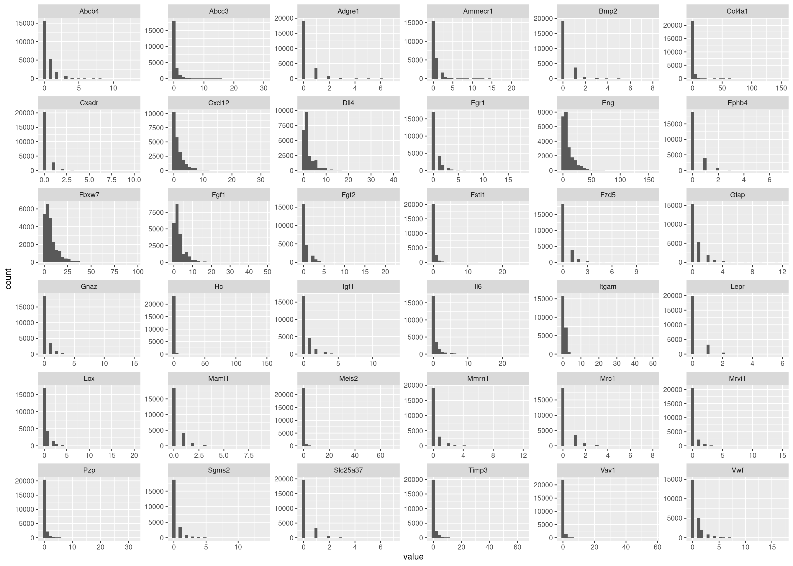
Cell Types per Sample
cell.meta %>%
count(sample, type_name) %>%
ggplot() +
geom_bar(aes(y = type_name, x = n), stat="identity") +
facet_wrap(~ sample) +
theme(axis.text.x = element_text(angle = 90, vjust = 0.5, hjust=1))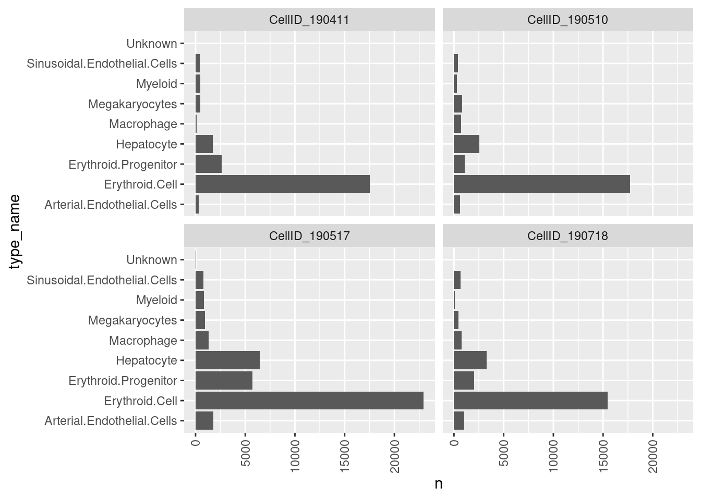
Visualization of a Part of the Sample
The visualization are now based on the assumption that the images are 1536 x 1536 (all these things were not quite documented at all!).
if ("CellID_190411.pixels.RDS" %in% list.files("data/merfish_benchmark")) {
CellID_190411.pixels <- readRDS("data/merfish_benchmark/CellID_190411.pixels.RDS")
} else {
img.size <- 1536
CellID_190411.pixels <- map_dfr(seq.int(1, dim(raw.data$CellID_190411)[3]), function(i) {
cell_i <- raw.data$CellID_190411[1:8, 1, i]
tibble::tibble(id = cell_i$CellID, type = cell_i$CellType, fov = cell_i$FOV,
pixels = cell_i$PixelList)
}) %>%
mutate(type = factor(type)) %>%
mutate(id = factor(id)) %>%
mutate(y = pixels %% img.size, x = ceiling(pixels / img.size))
saveRDS(CellID_190411.pixels, "data/merfish_benchmark/CellID_190411.pixels.RDS")
}
rm(raw.data)Verification of the right image size.
Example field of view 5.
CellID_190411.pixels %>%
filter(fov == 5) %>%
ggplot() +
geom_point(aes(x=x, y=y, col=id), size=.1) +
theme(legend.position = "none") +
scale_color_manual(values=rep(c("dodgerblue", "brown", "purple", "blue",
"seagreen", "gold", "tomato", "turquoise",
"magenta", "springgreen"), 250)) +
coord_equal()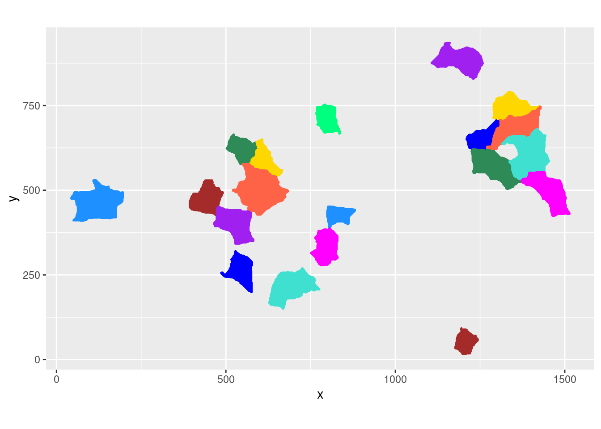
Example field of view 1.
CellID_190411.pixels %>%
filter(fov == 1) %>%
ggplot() +
geom_point(aes(x=x, y=y, col=id), size=.1) +
theme(legend.position = "none") +
scale_color_manual(values=rep(c("dodgerblue", "brown", "purple", "blue",
"seagreen", "gold", "tomato", "turquoise",
"magenta", "springgreen"), 250)) +
coord_equal()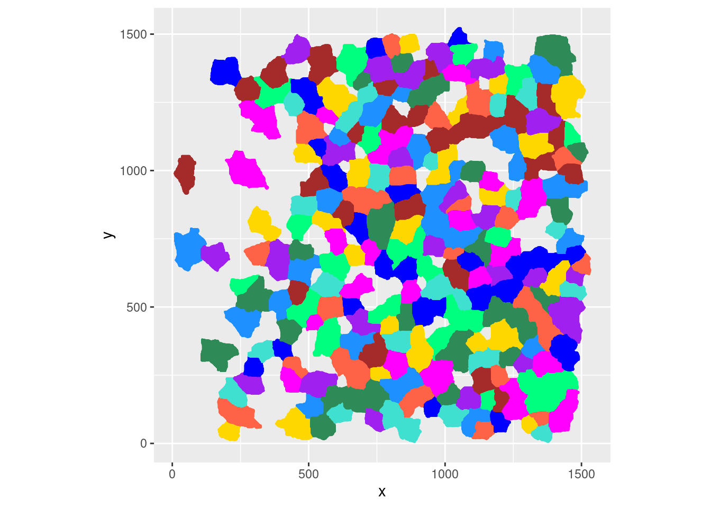
Check wether the center of mass makes sense. It looks very good.
center.mass <- cell.data$CellID_190411 %>%
filter(fov == 5) %>%
mutate(id = factor(id)) %>%
mutate(center_x = x, center_y = y) %>%
select(c(id, fov, center_x, center_y))
CellID_190411.pixels %>%
filter(fov == 5) %>%
left_join(center.mass, by="id") %>%
ggplot() +
geom_point(aes(x=x, y=y, col=id), size=.1, alpha=0.01) +
geom_point(aes(x=center_x, y=center_y, col=id), size=2) +
coord_equal()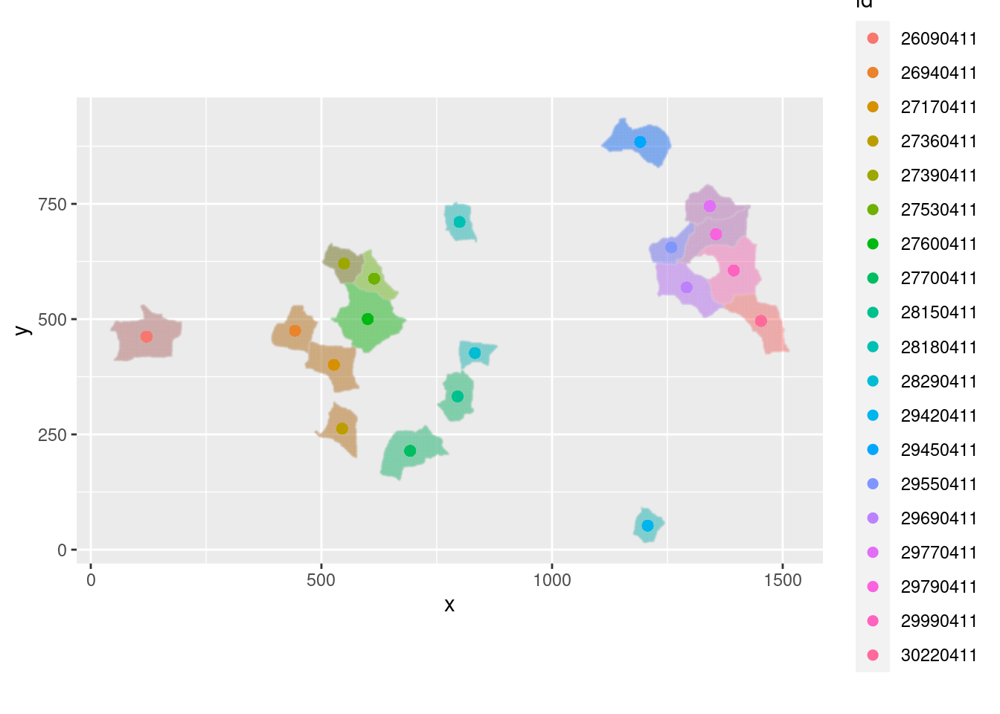
Now the next question is, could we stitch together the images?
How many field of views do we have per sample? Looking at the maximum index and the number of fovs which are present.
cell.meta %>% group_by(sample) %>% distinct(fov, .keep_all = TRUE) %>%
summarise(max(fov))cell.meta %>% group_by(sample) %>% distinct(fov, .keep_all = TRUE) %>%
summarise(n())Looking more closely at CellID_190411.
For example plot the first 4 fields of views in a row.
From looking at these images I would assume that we are looking at the left side of the image actually. And thus we need to stitch along the y-axis.
CellID_190411.pixels %>%
filter(fov %in% seq.int(0, 3)) %>%
ggplot() +
geom_point(aes(x=x, y=y, col=id), size=.1) +
theme(legend.position = "none") +
scale_color_manual(values=rep(c("dodgerblue", "brown", "purple", "blue",
"seagreen", "gold", "tomato", "turquoise",
"magenta", "springgreen"), 250)) +
facet_wrap(~ fov, ncol=4) +
coord_equal()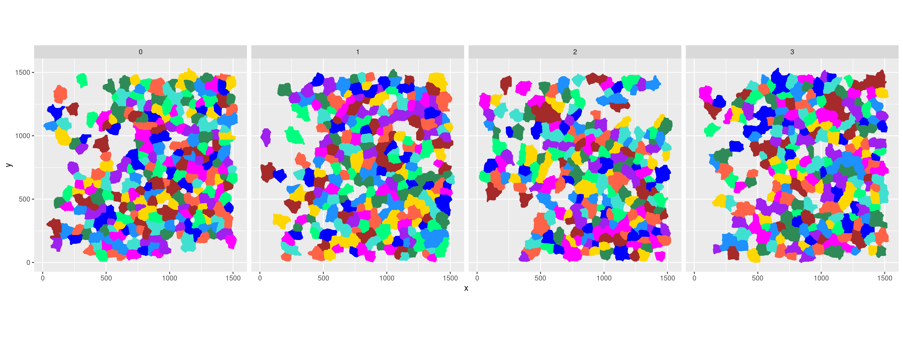
What if we look at last 4 fovs?
CellID_190411.pixels %>%
filter(fov %in% seq.int(117, 120)) %>%
ggplot() +
geom_point(aes(x=x, y=y, col=id), size=.1) +
theme(legend.position = "none") +
scale_color_manual(values=rep(c("dodgerblue", "brown", "purple", "blue",
"seagreen", "gold", "tomato", "turquoise",
"magenta", "springgreen"), 250)) +
facet_wrap(~ fov, ncol=4) +
coord_equal()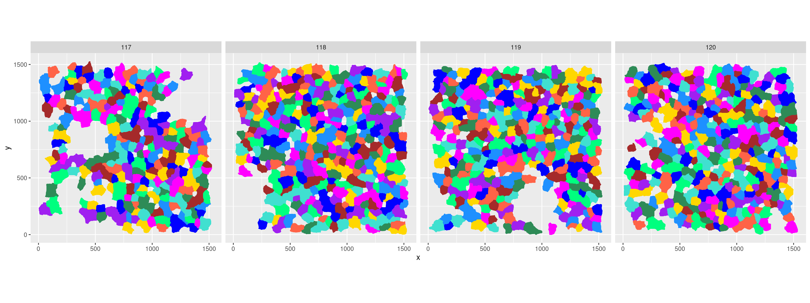
So all in all I have no clue how I would have to stitch them together!
These are some hints from the Matlab code
ImageSize = 1536 # number of pxls
StepSize = 1394 # 150/0.1076
# overlap -> 142
XSteps = 13
YSteps = 15
EndFrame = 40
StartFrame =18
NFOV = 144 # number of fields of viewsIf there is in fact a certain overlap between the images I would assume that we have the same cell ID in different field of views. Is this true?
No each cell ID is only in one field of view. Still this could be an artifact of removing all cell which were on the edge from the data.
cell.data$CellID_190411 %>%
group_by(id) %>%
summarise(n = length(unique(fov))) %>%
summary(n) id.V1 n
Min. : 540411 Min. :1
1st Qu.:136767911 1st Qu.:1
Median :290650411 Median :1
Mean :298473728 Mean :1
3rd Qu.:451232911 3rd Qu.:1
Max. :603150411 Max. :1 We could assume one model for the first sample where we move the microscope from bottom left to the top, go back, one to the right and to the top again.
This could be reasonable, but it is quite impossible to say wether it is right.
xsteps <- 11
fovs <- CellID_190411.pixels$fov %>% unique %>% as.vector()
#fovs
model_1 <- fovs %>% map_dfr(function(fov) {
y <- floor(fov / xsteps)
x <- fov - y*xsteps
tibble::tibble(fov = fov, xstep = x, ystep = y)
})
#model_1
xdict <- model_1$xstep %>% setNames(model_1$fov)
ydict <- model_1$ystep %>% setNames(model_1$fov)
# now I need to add values to the x and y coordinates based on the steps
# (where in the global image we are)
ImageSize = 1536
StepSize = 1394
subsampled <- sample(1:nrow(CellID_190411.pixels), 0.01*nrow(CellID_190411.pixels))
#test <- CellID_190411.pixels %>%
# slice(subsampled) %>%
# rowwise() %>%
# mutate(newx = x + xdict[fov]*StepSize,
# newy = y + ydict[fov]*StepSize)
# use some vectorized approch to deal with the pixels.
prep <- CellID_190411.pixels %>%
slice(subsampled)
# checke whether we have all
#prep$fov %>% unique() %>% sort == names(xdict) %>% as.numeric() %>% sort
sx <- xdict[prep$fov %>% as.character]
sy <- ydict[prep$fov %>% as.character]
test <- cbind(prep, sx, sy) %>%
mutate(
newx = x + sx*StepSize,
newy = y + sy*StepSize
)
test %>%
ggplot() +
geom_point(aes(x = newx, y=newy, col=type), size=.1) +
#theme(legend.position = "none") +
scale_color_manual(values=rep(c("dodgerblue", "brown", "purple", "blue",
"seagreen", "gold", "tomato", "turquoise",
"magenta", "springgreen"), 1000000)) +
coord_equal() +
scale_x_continuous(name="Speed of cars", limits=c(0, 16000), breaks = )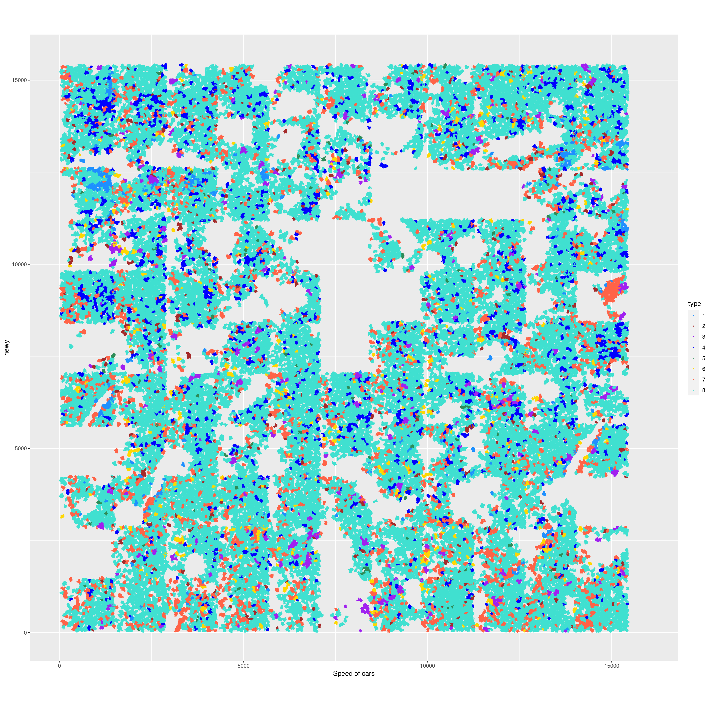
What about another test if we change x and y.
This just looks super wrong!
xsteps <- 11
fovs <- CellID_190411.pixels$fov %>% unique %>% as.vector()
#fovs
model_1 <- fovs %>% map_dfr(function(fov) {
x <- floor(fov / xsteps)
y <- fov - x*xsteps
tibble::tibble(fov = fov, xstep = x, ystep = y)
})
#model_1
xdict <- model_1$xstep %>% setNames(model_1$fov)
ydict <- model_1$ystep %>% setNames(model_1$fov)
# now I need to add values to the x and y coordinates based on the steps
# (where in the global image we are)
ImageSize = 1536
StepSize = 1394
subsampled <- sample(1:nrow(CellID_190411.pixels), 0.01*nrow(CellID_190411.pixels))
#test <- CellID_190411.pixels %>%
# slice(subsampled) %>%
# rowwise() %>%
# mutate(newx = x + xdict[fov]*StepSize,
# newy = y + ydict[fov]*StepSize)
# use some vectorized approch to deal with the pixels.
prep <- CellID_190411.pixels %>%
slice(subsampled)
# checke whether we have all
#prep$fov %>% unique() %>% sort == names(xdict) %>% as.numeric() %>% sort
sx <- xdict[prep$fov %>% as.character]
sy <- ydict[prep$fov %>% as.character]
test <- cbind(prep, sx, sy) %>%
mutate(
newx = x + sx*StepSize,
newy = y + sy*StepSize
)
test %>%
ggplot() +
geom_point(aes(x = newx, y=newy, col=type), size=.1) +
#theme(legend.position = "none") +
scale_color_manual(values=rep(c("dodgerblue", "brown", "purple", "blue",
"seagreen", "gold", "tomato", "turquoise",
"magenta", "springgreen"), 1000000)) +
coord_equal()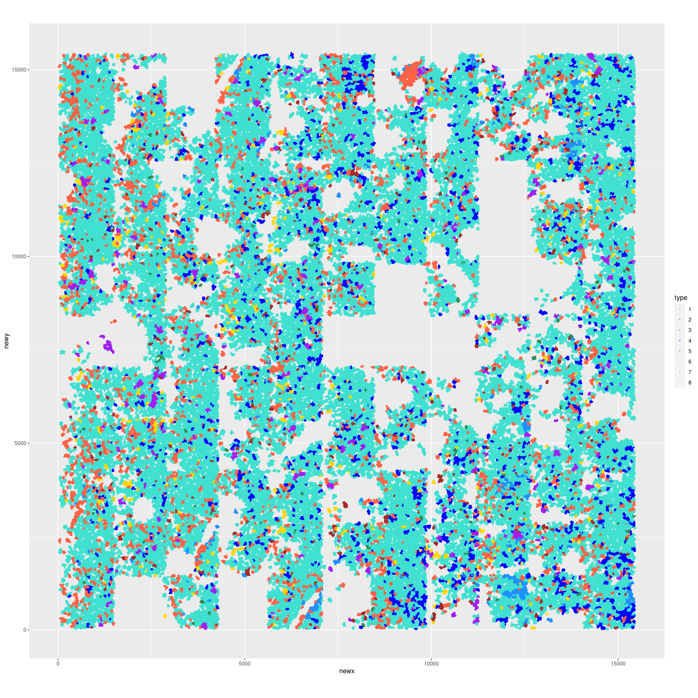
Since once cannot really say how and whether it makes sense to stitch those images together, we will run MISTy on each sample on each field of view.
But first we will remove all the FOVs which have too few cells.
map2_dfr(cell.data, names(cell.data), function(smp, name) {
smp %>%
group_by(fov) %>%
summarise(n = n()) %>%
mutate(sample = name)
}) %>%
ggplot() +
geom_histogram(aes(n), bins=50, col="black", fill="blue") +
facet_wrap(~ sample) +
geom_vline(xintercept = 125, col="red")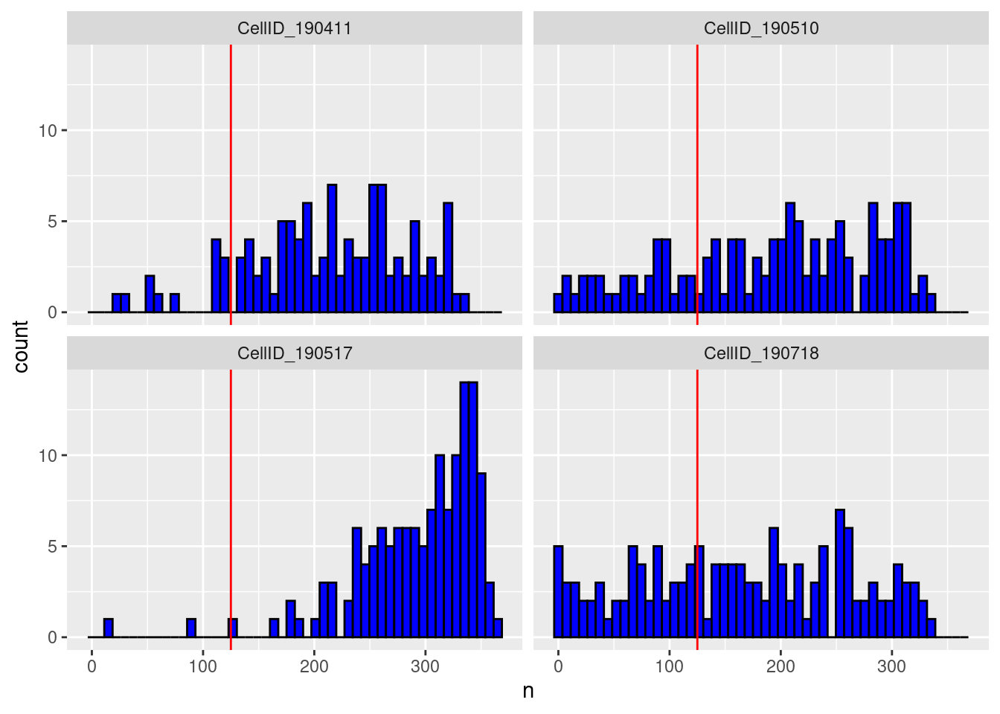
Removing every FOV with fewer than 125 cells
keep.smp <- map(cell.data, function(smp) {
smp %>%
group_by(fov) %>%
summarise(n = n()) %>%
filter(n >= 125) %>%
pull(fov) %>%
as.numeric()
})
map_dbl(keep.smp, ~ length(.x))CellID_190411 CellID_190510 CellID_190517 CellID_190718
98 94 138 92 Let’s look at the average distance to the direct neighbors per cell per field of view (per sample).
# helper function for nearest neighbors
dist_k_nn <- function(sample, k) {
nn <- RANN::nn2(sample, eps=0.0, k = k)
map_dbl(seq_len(nrow(sample)), function(n) {
mean(nn$nn.dists[n, ])
})
}
# helper function for getting direct neighbors
get_neighbors <- function(ddobj, id) {
dplyr::union(
ddobj$delsgs$ind1[which(ddobj$delsgs$ind2 == id)],
ddobj$delsgs$ind2[which(ddobj$delsgs$ind1 == id)]
)
}So the best threshold for the juxtaview may be 100.
# map over FOV in each sample
mean.dists.direct.neighbors.smp <- map2(keep.smp, names(keep.smp), function(keep, name) {
map(keep, function(test.fov) {
coords <- cell.data[[name]] %>% filter(fov == test.fov) %>%
select(c(x, y)) %>% as.data.frame
delaunay <- deldir::deldir(coords)
dists <- distances::distances(coords)
map_dbl(seq_len(nrow(coords)), function(id) {
nn <- get_neighbors(delaunay, id)
mean(dists[nn, id])
})
})
})
map2_dfr(mean.dists.direct.neighbors.smp, names(mean.dists.direct.neighbors.smp), function(dists, name) {
tibble::tibble(dist = unlist(dists), sample = name)
}) %>%
ggplot() +
geom_histogram(aes(dist), bins = 100) +
lims(x = c(0,200)) +
geom_vline(xintercept = 100, col = "blue") +
facet_wrap(~ sample)Warning: Removed 5188 rows containing non-finite values (stat_bin).Warning: Removed 8 rows containing missing values (geom_bar).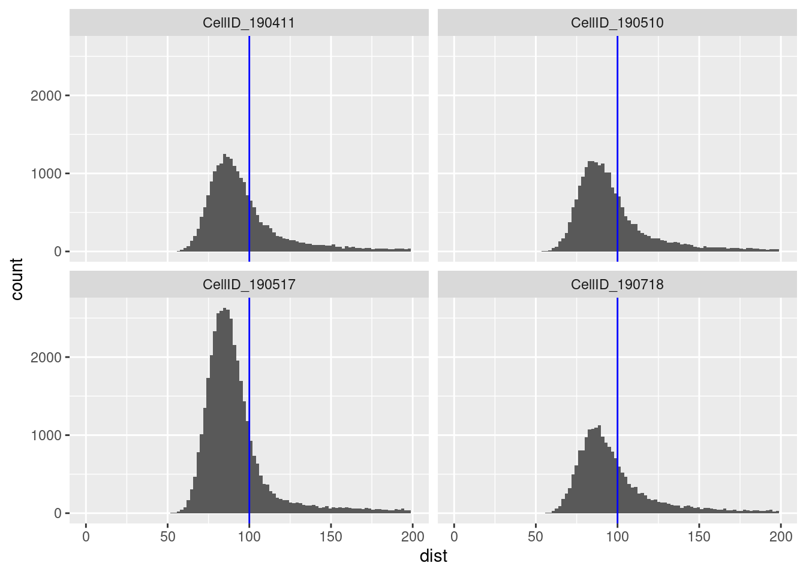
Furthermore we will look at the distribution of the mean distances to the 10 -, 20 -, 30 -, and 40 closest cells to get a feeling for which cutoff will be used to generate the paraview (just for the first sample!)
It seems like a distance of 180 for the paraview generation might be reasonable.
neighbor.dists <- map_dfr(keep.smp$CellID_190411, function(test.fov) {
coords <- cell.data$CellID_190411 %>% filter(fov == test.fov) %>%
select(c(x, y)) %>% as.data.frame
c(10, 15, 20, 30) %>%
set_names() %>%
map_dfc(function(k) {
dist_k_nn(coords, k)
}) %>%
set_names(paste0("dist_to_", c("10", "15", "20", "30")))
})
neighbor.dists %>%
pivot_longer(cols = everything()) %>%
mutate(name = factor(name,
levels = paste0("dist_to_", c("10", "15", "20", "30")))) %>%
ggplot() +
geom_histogram(aes(value), bins = 100) +
facet_wrap(~ name) +
lims(x = c(0, 300)) +
geom_vline(xintercept = 180, col = "blue")Warning: Removed 1204 rows containing non-finite values (stat_bin).Warning: Removed 8 rows containing missing values (geom_bar).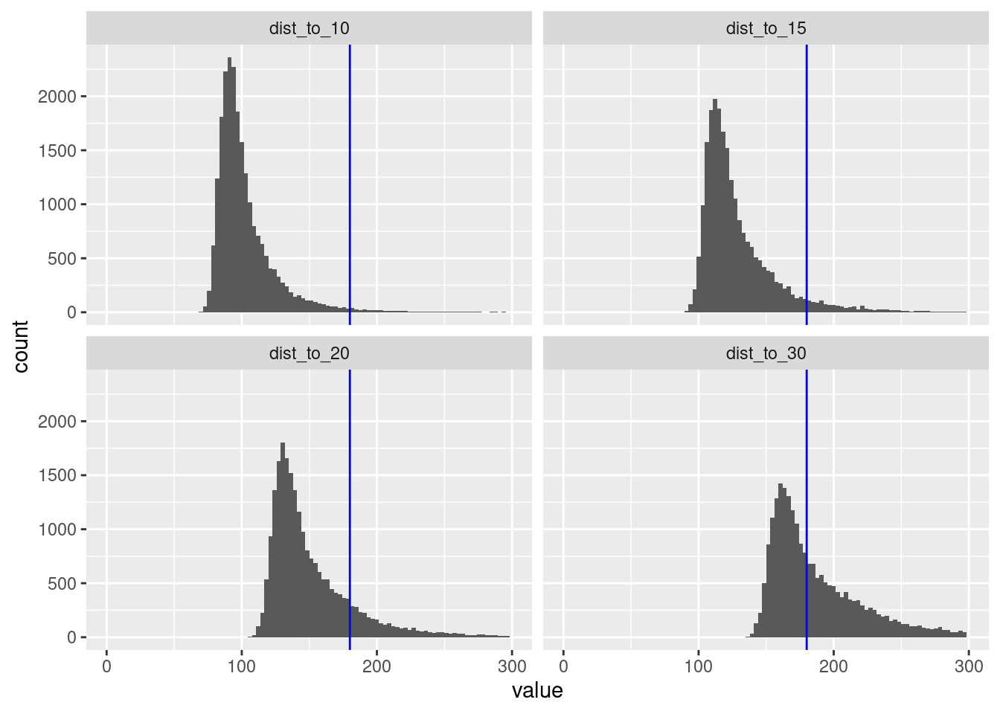
Calculate the views.
As always we need to make sure that we delete markers with zero variance in each view.
if ("misty_views.RDS" %in% list.files("data/merfish_benchmark")) {
misty.views.smp <- readRDS("data/merfish_benchmark/misty_views.RDS")
} else {
misty.views.smp <- map2(keep.smp, names(keep.smp), function(keep, name) {
misty.views <- map(keep, function(test.fov) {
cell.meta <- cell.data[[name]] %>%
filter(fov == test.fov)
coords <- cell.meta %>% select(x, y)
ids <- cell.meta$id
expr <- expr.data.norm[[name]][(expr.data.norm[[name]] %>% pull(id)) %in% ids, ] %>%
select(-id)
# calculate variance per gene
expr.clean <- expr[, matrixStats::colVars(expr %>% as.matrix) != 0]
create_initial_view(expr.clean) %>%
add_juxtaview(positions = coords, neighbor.thr = 100) %>%
add_paraview(positions = coords, l = 180, zoi = 100)
})
names(misty.views) <- paste0(name, "_fov_", keep)
misty.views
}) %>%
unlist(recursive = FALSE)
saveRDS(misty.views.smp, "data/merfish_benchmark/misty_views.RDS")
}length(misty.views.smp)[1] 444To run MISTy we will only use the 40 most variable genes (controlling for the mean).
var.genes <- map_dfr(expr.data.norm, function(expr) {
expr %>% select(-id)
}) %>%
pivot_longer(cols = everything()) %>%
group_by(name) %>%
summarise(mean = mean(value), var = var(value)) %>%
mutate(ratio = var / mean) %>%
slice_max(order_by = ratio, n = 40) %>%
pull(name)
var.genes [1] "Fstl1" "Itga2b" "Eng" "Il6" "Hc" "Vav1" "Pou2af1"
[8] "Timp3" "Abcc3" "B4galt6" "Col4a1" "Fbxw7" "Mpp1" "Pzp"
[15] "Efnb2" "Hoxb4" "Vwf" "Egr1" "Nrp1" "Eif3a" "Gnaz"
[22] "Ammecr1" "Fgf1" "Olr1" "Mrvi1" "Dll4" "Cxcl12" "Lox"
[29] "Meis2" "Itgam" "Fam46c" "Mmrn1" "Tet1" "Cd34" "Sgms2"
[36] "Fzd5" "Gca" "Ctnnal1" "Procr" "Ddx4" Running MISTy
if ("ranger_results.RDS" %in% list.files("data/merfish_benchmark")) {
ranger.results <- readRDS("data/merfish_benchmark/ranger_results.RDS")
} else {
cv.folds = 10
ranger.results.folders <- map2(
misty.views.smp, names(misty.views.smp), function(smp, name) {
sel.genes <- var.genes[var.genes %in% colnames(smp$intraview$data)]
smp %>% run_misty(results.folder = paste0("misty_results/merfish/ranger_", name),
cv.folds = cv.folds, model.function = ranger_model,
target.subset = sel.genes)
})
ranger.results <- collect_results(ranger.results.folders)
saveRDS(ranger.results, "data/merfish_benchmark/ranger_results.RDS")
}What can we actually explain:
plot_improvement_stats(ranger.results, measure = "multi.R2")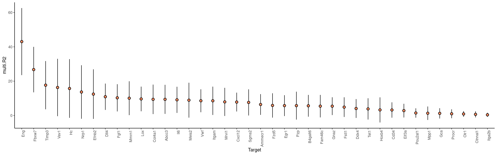
And for which markers to we gain explained variance if we incorporate the spatial context?
plot_improvement_stats(ranger.results, measure = "gain.R2")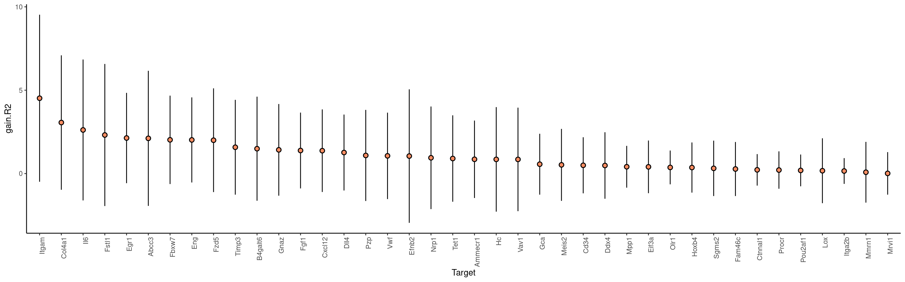
plot_view_contributions(ranger.results)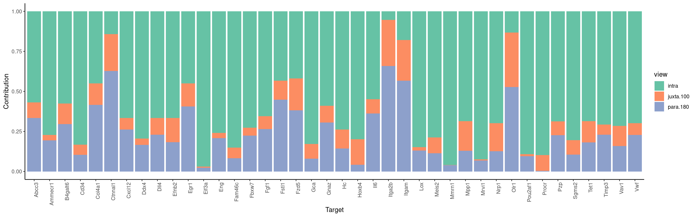
plot_interaction_heatmap(ranger.results, view = "para.180", clean = TRUE, cutoff = 0.3)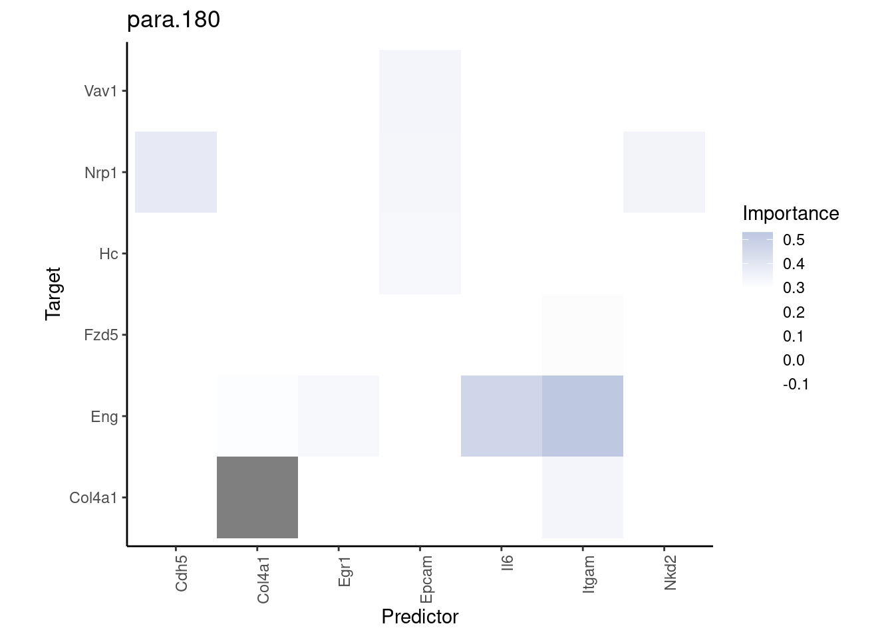
Did we chose the right image size?
Are the cells really overlapping? One possible explanation is that we have different field of views
walk(c(1400, 1500, 1536, 1600), function(img.size) {
plot <- CellID_190411.pixels %>%
mutate(x = pixels %% img.size, y = ceiling(pixels / img.size)) %>%
filter(id %in% c(148290411, 46540411, 52020411)) %>%
mutate(id = factor(id)) %>%
ggplot() +
geom_point(aes(x=x, y=y, col=id), size=.1)
print(plot)
})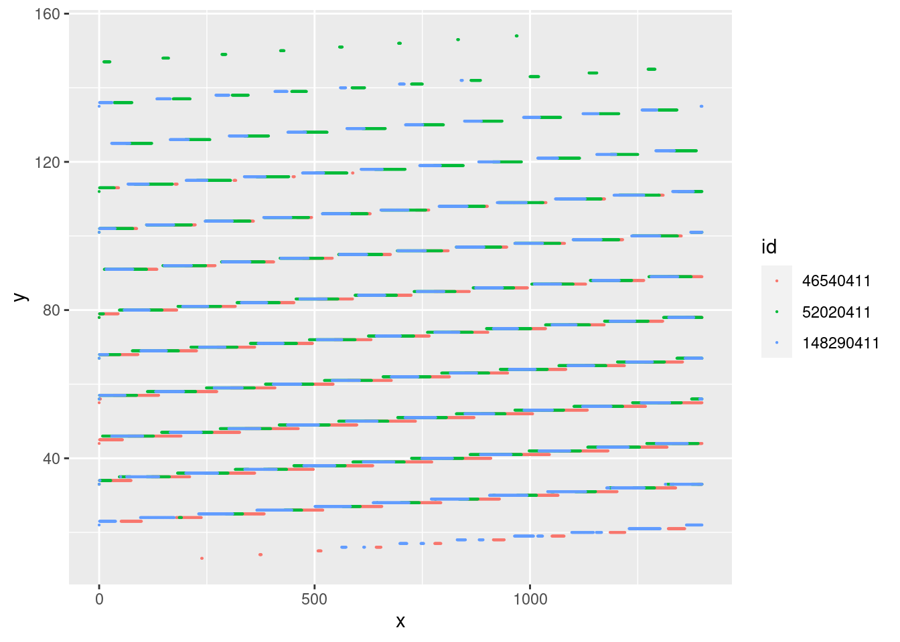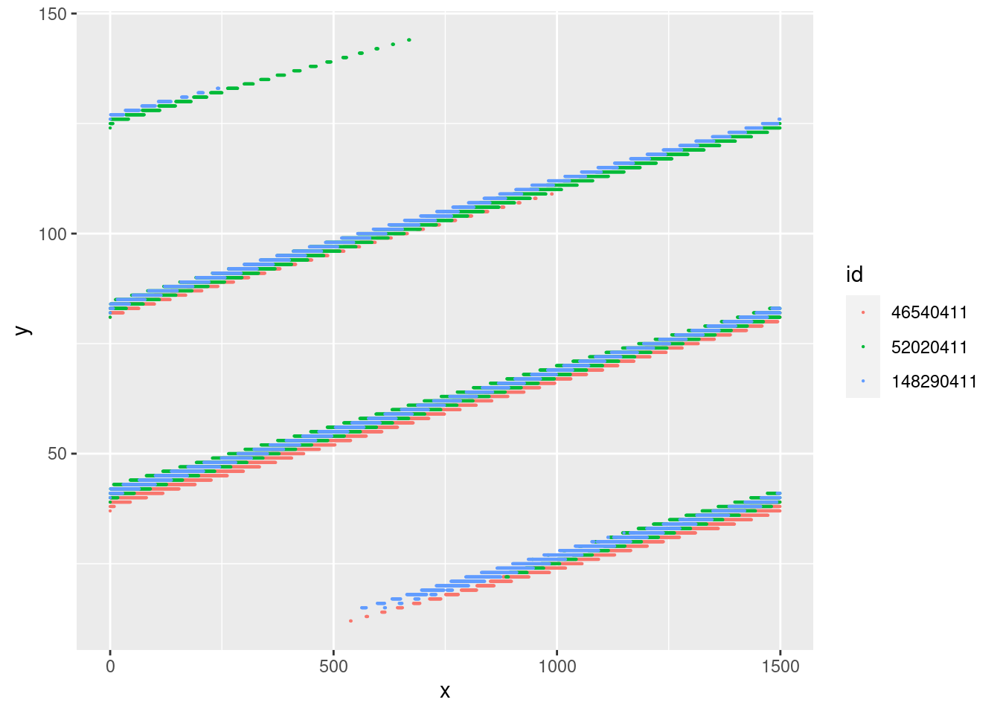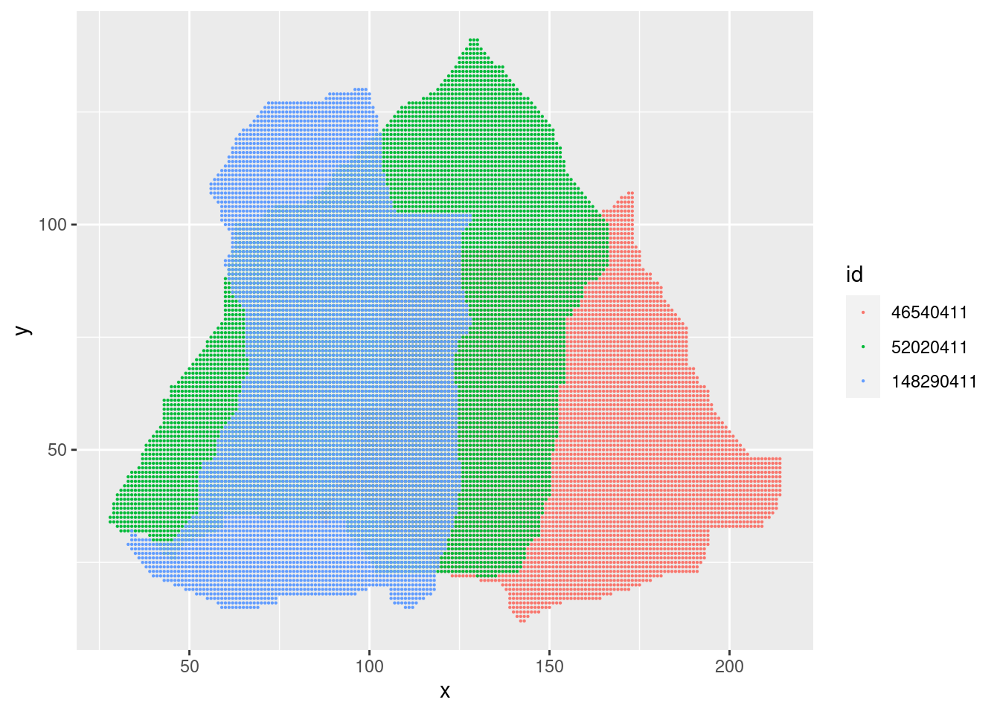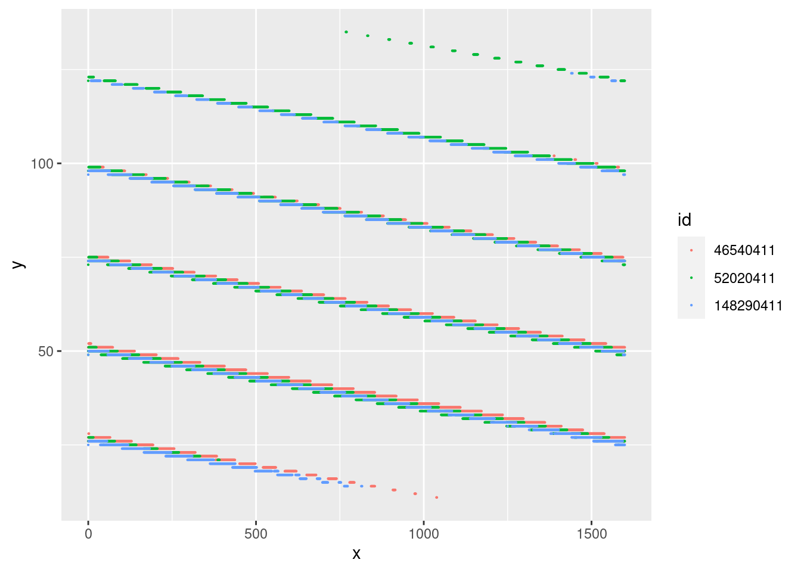
Now plot the center of mass on top to check whether this can actually be right.
center.mass <- cell.data$CellID_190411 %>%
filter(id %in% c(148290411, 46540411, 52020411)) %>%
mutate(id = factor(id)) %>%
mutate(center_x = x, center_y = y) %>%
select(c(id, fov, center_x, center_y))
img.size <- 1536
CellID_190411.pixels %>%
filter(id %in% c(148290411, 46540411, 52020411)) %>%
mutate(id = factor(id)) %>%
left_join(center.mass, by="id") %>%
ggplot() +
geom_point(aes(x=x, y=y, col=id), size=.1) +
geom_point(aes(x=center_x, y=center_y, col=id), size=5)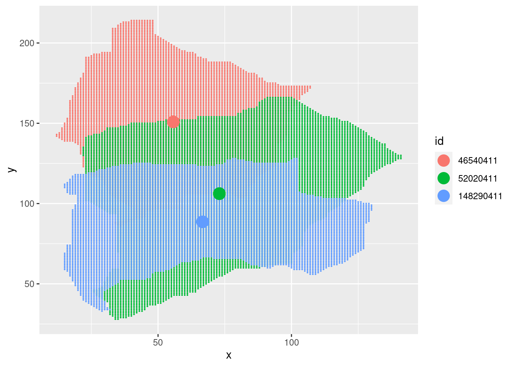
clear all
close all
ImageSize = 1536; % number of pxls
StepSize = 1394; %pxl; 150/0.1076
XSteps = 13;
YSteps = 15;
EndFrame = 40;
StartFrame =18;
NFOV = 144; % number of fields of views
FileNameForWGA = 'sequential/Cy3_00_';
%%
StartPxl = (ImageSize-StepSize)/2+1; %(1536-1394)/2+1=72
EndPxl = ImageSize-StartPxl+1; % ImageSize-71;
TotalImage = zeros(StepSize*XSteps, StepSize*YSteps);
X = 1-StepSize;
Y = 1;
for jj = 0:NFOV-1
if NFOV<=10
FOVid = num2str(jj);
elseif NFOV>10 && NFOV<=100
if jj<10
FOVid = ['0' num2str(jj)];
else
FOVid = [num2str(jj)];
end
elseif NFOV>100
if jj<10
FOVid = ['00' num2str(jj)];
elseif jj<100
FOVid = ['0' num2str(jj)];
else
FOVid = [num2str(jj)];
end
end
FileName1 = [FileNameForWGA FOVid];
[MovieFP, InfoFile] = ReadDax([FileName1, '.dax'],'startFrame', StartFrame, 'endFrame', EndFrame);
Image1 = mean(MovieFP,3);
% use adaptive thresholding to get more uniform intensity across filed of view
Image1 = double(Image1);
Image1 = Image1 - min(min(Image1));
Image1 = Image1/max(max(Image1));
T = adaptthresh(Image1, 0.7,'NeighborhoodSize',33);
Image1 = Image1./T;
Min = quantile(Image1(:), 0.4);
Max = quantile(Image1(:), 0.99);
Image1 = (Image1-Min)/(Max-Min)*255;
Image1(find(Image1<0)) = 0;
Image1(find(Image1>255)) = 255;
% adjust image oreintation so that they can be correctly stiched
% together
Image1(:,1:end) = Image1(:,end:-1:1);
Image1 = Image1';
if mod(jj,2*XSteps) == 0 || mod(jj,2*XSteps) == XSteps
X = X + StepSize;
elseif mod(jj,2*XSteps) >= 1 && mod(jj,2*XSteps) <= XSteps-1
Y = Y + StepSize;
else
Y = Y - StepSize;
end
Image1 = Image1(StartPxl:EndPxl,StartPxl:EndPxl);
TotalImage(Y:Y+StepSize-1, X:X+StepSize-1) = Image1;
end
TotalImage = uint8(TotalImage);
figure(1)
imagesc(TotalImage);
axis equal
colormap gray
imwrite(TotalImage,'TotalImage.png')
save('TotalImage.mat','TotalImage');
sessionInfo()R version 4.1.2 (2021-11-01)
Platform: x86_64-pc-linux-gnu (64-bit)
Running under: Ubuntu 20.04.3 LTS
Matrix products: default
BLAS: /usr/lib/x86_64-linux-gnu/blas/libblas.so.3.9.0
LAPACK: /usr/lib/x86_64-linux-gnu/lapack/liblapack.so.3.9.0
locale:
[1] LC_CTYPE=en_US.UTF-8 LC_NUMERIC=C
[3] LC_TIME=en_US.UTF-8 LC_COLLATE=en_US.UTF-8
[5] LC_MONETARY=en_US.UTF-8 LC_MESSAGES=en_US.UTF-8
[7] LC_PAPER=en_US.UTF-8 LC_NAME=C
[9] LC_ADDRESS=C LC_TELEPHONE=C
[11] LC_MEASUREMENT=en_US.UTF-8 LC_IDENTIFICATION=C
attached base packages:
[1] stats graphics grDevices utils datasets methods base
other attached packages:
[1] R.matlab_3.6.2 forcats_0.5.1 stringr_1.4.0 dplyr_1.0.7
[5] purrr_0.3.4 readr_2.0.2 tidyr_1.1.4 tibble_3.1.5
[9] ggplot2_3.3.5 tidyverse_1.3.1 future_1.22.1 mistyR_1.3.1
loaded via a namespace (and not attached):
[1] httr_1.4.2 sass_0.4.0 jsonlite_1.7.2 R.utils_2.11.0
[5] modelr_0.1.8 bslib_0.3.1 assertthat_0.2.1 highr_0.9
[9] cellranger_1.1.0 yaml_2.2.1 globals_0.14.0 pillar_1.6.3
[13] backports_1.3.0 glue_1.4.2 digest_0.6.28 RColorBrewer_1.1-2
[17] promises_1.2.0.1 rvest_1.0.1 colorspace_2.0-2 htmltools_0.5.2
[21] httpuv_1.6.3 R.oo_1.24.0 pkgconfig_2.0.3 broom_0.7.9
[25] listenv_0.8.0 haven_2.4.3 scales_1.1.1 RANN_2.6.1
[29] later_1.3.0 tzdb_0.1.2 git2r_0.28.0 generics_0.1.0
[33] farver_2.1.0 ellipsis_0.3.2 withr_2.4.2 cli_3.0.1
[37] magrittr_2.0.1 crayon_1.4.1 readxl_1.3.1 deldir_1.0-5
[41] evaluate_0.14 R.methodsS3_1.8.1 fs_1.5.0 fansi_0.5.0
[45] parallelly_1.28.1 xml2_1.3.2 distances_0.1.8 tools_4.1.2
[49] hms_1.1.1 lifecycle_1.0.1 munsell_0.5.0 reprex_2.0.1
[53] compiler_4.1.2 jquerylib_0.1.4 rlang_0.4.12 grid_4.1.2
[57] rstudioapi_0.13 labeling_0.4.2 rmarkdown_2.11 gtable_0.3.0
[61] codetools_0.2-18 DBI_1.1.1 R6_2.5.1 lubridate_1.8.0
[65] knitr_1.36 fastmap_1.1.0 utf8_1.2.2 workflowr_1.6.2
[69] rprojroot_2.0.2 stringi_1.7.5 parallel_4.1.2 Rcpp_1.0.7
[73] vctrs_0.3.8 dbplyr_2.1.1 tidyselect_1.1.1 xfun_0.26